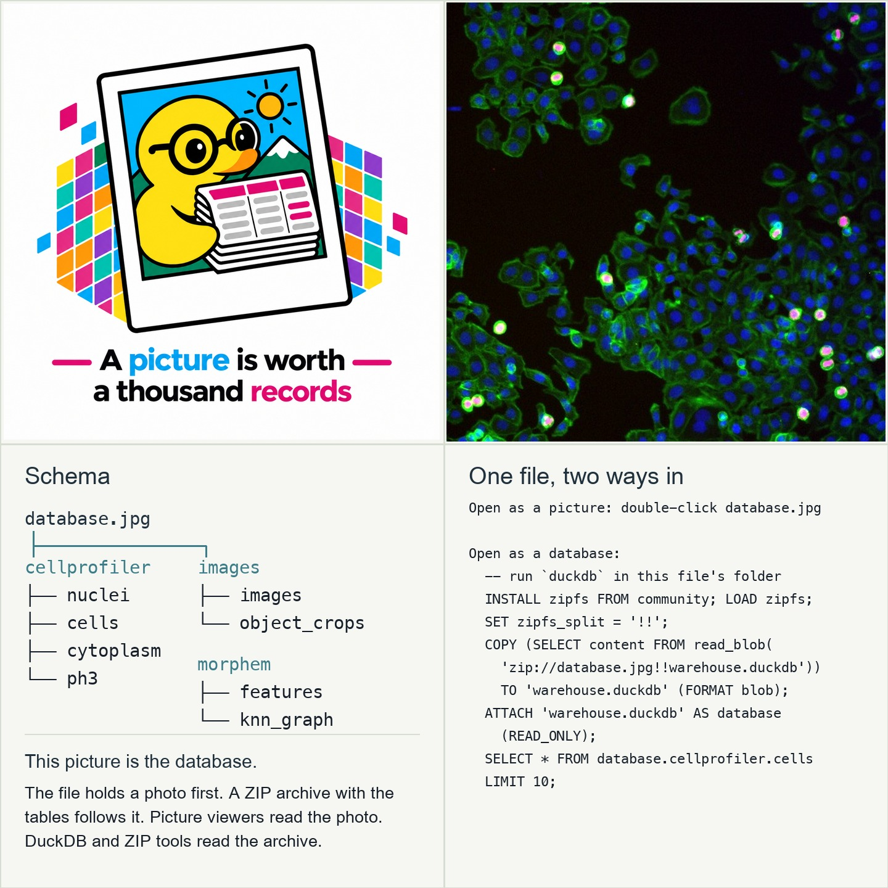

A picture is worth a thousand records
database.jpg opens as a normal picture. It also carries a
DuckDB database. The picture comes first. After it, the same file stores
real microscope crops, cell measurements, and model embeddings. An
embedding is a list of numbers that describes one cell.
This is a human-centered file for image-based science. First, you see the instructions, schema, and cells. Then an embedded DuckDB database lets you query the same file in your browser. The plots show how MorphEm, a pretrained model, groups cells that look alike.

Run your own SQL
Start with a question. This box runs real SQL against the database. Pick an example query, or write your own.
Waiting for database.jpg to load...
Each point below is one real cell. Similar cells sit near each other. The two maps use different methods, so you can compare them.
UMAP projection
UMAP places each cell as a point on a flat map. Similar cells end up close together.
HNSW k-NN graph layout
HNSW is an index: a structure that quickly finds nearest neighbors. This plot draws the cells it connected.
Search for a cell by number, or let the page pick one. The maps will highlight that cell and its nearest neighbors.
Loading database.jpg into DuckDB-Wasm...
Could not fetch database.jpg automatically (this happens
when the page is opened from disk). Choose the file yourself. It stays
in your browser and is never uploaded:
What is inside database.jpg
The file database.jpg is two files joined end to end.
The first part is a JPEG picture. The second part is a ZIP archive.
The archive holds two files.
warehouse.duckdb: the database. DuckDB (a program that keeps tables in one file) reads it.README.md: the instructions for the database.
How can one file be both?
A JPEG ends with a two-byte marker, FF D9. The marker
means that the picture ends here. A picture viewer stops at this
marker and ignores every byte after it.
A ZIP archive keeps its table of contents at the end of the file. A ZIP tool reads the end first. The table of contents tells the tool where each file starts, so the tool never needs the bytes at the front.
As a result, each tool sees only its own part. The picture viewer
sees a picture. The ZIP tool sees an archive. The ZIP data does not
change the picture. The archive stores the database without
compression, so the database inside it is a byte-for-byte copy of
warehouse.duckdb.
CAUTION: Keep the original file. Some apps re-save a picture when you send or upload it. A re-saved picture keeps only the photo and loses the database.
Why this shape?
We drew inspiration from F3, a data-file design that stores data, metadata, and WebAssembly decoders together. We also drew on JUMP-lite, which focuses on compact, reproducible image-based profiling data. This project takes a simpler path for image-based science. The code lives on this page. The file opens first as an image, so anyone can see what the data is about before they run a query.
How this all works
The cell crops start with Cellpose, a general cell segmentation method. Cellpose segments the cell-body channel. CellProfiler-style thresholding finds nuclei and PH3 foci. Then cp_measure computes the feature tables.
Everything above uses the same real data. Each segmented cell has an
embedding in morphem.features.embedding. The embedding
has 1152 numbers from the pretrained
CaicedoLab/MorphEm model. DuckDB compares two
embeddings with array_distance. This page uses that same
function when you search or click a cell.
The two plots draw the same embeddings in two ways.
UMAP (McInnes, Healy & Melville, 2018)
makes a flat map of the cells. It measures distance the same way that
array_distance does.
The HNSW graph uses a different method. An HNSW index (Malkov & Yashunin, 2016) finds each cell's 6 nearest neighbors. Then networkx draws the graph. The lines are real neighbor links, not a copy of the UMAP map.
Does this match the source paper?
The clusters connect to the study that produced this data. Jason Moffat, a co-author of that study (Moffat et al. 2006, Cell), provided these images. The study used PH3 staining to measure mitotic index: the fraction of cells caught while they divide.
This warehouse finds 21 real PH3-positive (mitotic) cells out of 303 in this one field. No one told the model which cells were mitotic. Still, those cells cluster together. On average, 91% of a PH3-positive cell's nearest neighbors, found by the HNSW index, are also PH3-positive. Random scattering of mitotic cells predicts only 7%.
MorphEm never trained on this screen. It still finds the same mitotic-versus-resting difference, using only image shape and texture. This one field cannot recover the study's gene-by-gene results. But the cluster pattern gives a real, checkable link to the source data.
References
Here is where the data, the models, and the methods on this page came from.
- Zeng, X., Meng, R., Prammer, M., McKinney, W., Patel, J.M., Pavlo, A., et al. (2025). F3: The Open-Source Data File Format for the Future. Proceedings of the ACM on Management of Data, 3(4), 1 to 27. Inspiration for a file that carries both data and the means to read it.
- Moffat, J., Grueneberg, D.A., Yang, X., et al. (2006). A lentiviral RNAi library for human and mouse genes applied to an arrayed viral high-content screen. Cell, 124(6), 1283 to 1298. Source of the microscope images and the mitotic-index screen used above.
- Carpenter, A.E., Jones, T.R., Lamprecht, M.R., et al. (2006). CellProfiler: image analysis software for identifying and quantifying cell phenotypes. Genome Biology, 7(10), R100.
- Stringer, C., Wang, T., Michaelos, M., & Pachitariu, M. (2021). Cellpose: a generalist algorithm for cellular segmentation. Nature Methods, 18, 100 to 106. Used to segment cells from the cell-body channel.
- Pachitariu, M., & Stringer, C. (2022). Cellpose 2.0: how to train your own model. Nature Methods, 19, 1634 to 1641.
- Pachitariu, M., Rariden, M., & Stringer, C. (2025). Cellpose-SAM: superhuman generalization for cellular segmentation. bioRxiv. Cited because the current Cellpose package uses Cellpose-SAM as its default model.
- Munoz, A.F., Treis, T., Kalinin, A.A., Dasgupta, S., Theis, F., Carpenter, A.E., & Singh, S. (2025). cp_measure: API-first feature extraction for image-based profiling workflows. arXiv:2507.01163. Used to measure the real CellProfiler-style features in this database.
-
CytoTable (cytomining project). Source of
the ExampleHuman test fixtures and the join this database's
single_cellview follows. - Chen, Z., Pham, C., Wang, S., Doron, M., Moshkov, N., Plummer, B.A., & Caicedo, J.C. (2023). CHAMMI: A benchmark for channel-adaptive models in microscopy imaging. NeurIPS Datasets and Benchmarks Track. The dataset MorphEm trained on.
- CaicedoLab/MorphEm. The pretrained model used to compute each cell's embedding.
-
Munoz, A.F., Haslum, J.F., Shen, R., Carpenter, A.E., &
Singh, S. (2026).
JUMP-lite: Compact, reproducible benchmarking of
cell representations. arXiv:2608.07632. Benchmarks
CellProfiler and MorphEm using lossy JPEG XL compression, the
same codec this database uses for
pixel_data_jpegxl. - McInnes, L., Healy, J., & Melville, J. (2018). UMAP: Uniform Manifold Approximation and Projection for Dimension Reduction. arXiv:1802.03426.
- Malkov, Y.A., & Yashunin, D.A. (2016). Efficient and robust approximate nearest neighbor search using Hierarchical Navigable Small World graphs. arXiv:1603.09320.
- Raasveldt, M., & Muhleisen, H. (2019). DuckDB: an Embeddable Analytical Database. SIGMOD 2019.
- Hagberg, A.A., Schult, D.A., & Swart, P.J. (2008). Exploring network structure, dynamics, and function using NetworkX. Proceedings of the 7th Python in Science Conference (SciPy 2008), 11 to 15.